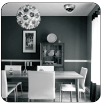
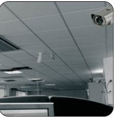
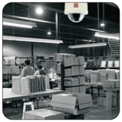
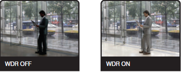
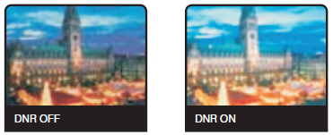

Ceasefire CCTV Systems
Call us Idealistic, But we Predict a Crime-Free Future.
Is it possible to rid a country of crime?
On the face of it, it seems a daunting task. But it can be done. Thanks is no small part to innovations in technology. The very
technology that has helped create Ceasefire’s futuristic CCTV System.
With this system, you can keep a close eye on your home or workplace round the clock. Which means no matter what
happens or where you may be when it happens, you'll be the first to know.
What is a CCTV System?

A CCTV System comprises of a DVR (Digital Video Recorder) and one or more
cameras.
This cutting edge system acts like an intelligence unit that reports only to you,
helping you monitor your home or workplace throughout the day. The cameras
pick up any action in their field of vision, display it on a monitor and feed it into
the DVR, which records and stores it for future references.
With a vast range of cameras, DVRs and accessories the CCTV surveillance
system can be customised to suit your needs.
Features
- It has an independent power supply unit to ensure consistent Power supply to all the devices in case of an electrical
Or UPS failure.
- Offers a variety of sophisticated cameras with several features.
- One DVR can be connected to several cameras.
- Can be customised to suit different types of environments.
Homes
Thanks to the Ceasefire CCTV System, you will never have to worry about
leaving domestic help alone at home again. Our Dome Cameras provide a 360
degree view, allowing you to keep an eye on every corner of your home. You
can find out if your expensive necklace was misplaced or stolen by accessing
footage recorded by the DVR. With this system, you can leave your home
confident that no one will be able to enter it without your knowledge.

Offices
With our CCTV cameras you will never have to worry about what goes on in your
workplace after office hours. If there are sensitive areas that need to be
monitored constantly; our system, equipped with motion detectors, will know
what to look out for. The cameras are cost effective and can be programmed to
begin recording the second the area under surveillance is trespassed or
disturbed in any way.

Factories
With our state-of-the-art surveillance system, factory owners can oversee
thousands of people at the same time and ensure that everything runs smoothly.
Our cameras are sophisticated enough to function perfectly even in less-thanideal
situations. Our Wide Dynamic Range Cameras, for instance, can
automatically adjust their sensors to suit the lighting of the area under
surveillance providing you with clear images even if there is a huge contrast in
lighting, allowing you to keep a vigilant eye on every corner of your factory.

Retail Outlets
CCTV systems are indispensable in retail outlets where one has to monitor a
vast area and hundreds of people at once.
The Ceasefire CCTV System makes it possible to identify shoplifters in large
crowds. Our DVRs allow you to view footage of several cameras at once, and
zoom in to the action if necessary.
The system’s motion detectors react to any disturbance in the area under
surveillance; and the Day and Night cameras provide clear images even at night.
Ceasefire CCTV Cameras
Ceasefire’s state-of-the-art CCTV cameras have Charge-Coupled Device (CCD) sensors that offer crystal clear images and can
be mounted on walls or ceilings. The range of cameras is broadly divided into Bullet Cameras and Dome Cameras.
Bullet Cameras
Integrated cameras and lenses that are sealed to prevent moisture from seeping
in are referred to as Bullet Cameras. Most of these cameras have a large
viewing angle. They are also compact, which makes them perfect for domestic
and commercial properties.

Dome Cameras
The camera’s dome-like shape is what gives it its name. The Dome Camera’s
unique design makes it difficult to judge where the camera is pointing without
close inspection. These cameras can be wall-mounted or ceiling-mounted.

Camera Features
The DNR DSP chipset has various powerful functions that give superior high resolution Day and Night images. It removes camera
noise and the Sensor provides quality images at very low luminance levels. The most advanced technology is combined on a
single DSP chipset, resulting in enhanced surveillance images.

| WDR |
WDR (Wide Dynamic Range) |
WDR is a powerful and ultra-advanced technology
that captures cleaner and superior high resolution
pictures even where images appear dark because
of the presence of strong back light.

| Digital No Rise
eduction |
3D Filtering Method of Newly Advanced DNR Function |
This function optimises the signal to noise ratio,
giving improved low light visibility and a powerful
Sens-Up function (up to 256 times magnification).

The combination of a Sony Super HAD CCD image
sensor and DNR DSP provides an excellent
resolution of 560 TV lines.

| BLC |
Spotlight BLC Function |
This function is especially effective for reading
vehicle number plates at night. Users can select
and define the required observation area for the
target object and ignore strong spotlight areas.